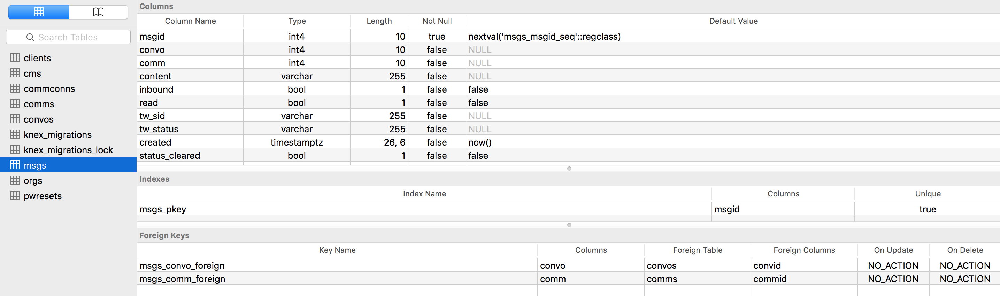

Growing Metrics with Tool Development
Once a tool's use has been determined sufficient to validate continued development, a second round of user research is implemented to determine prioritization for how to expand core components of the tool. In addition to this, observations of how the user is moving through the site or application are logged. These are used to improve and produce the first pass and subsequent passes at a more "full" implementation of a core design concept for how the user interfaces with the developed product.
In the case of ClientComm, this meant the inclusion of datetime values for every new component and entity that was created within the application for the second and third rounds of development. Every action, every creation, every update, and every delete was logged in the database. Thus, the database schema was designed to monitor all interaction with the database. Because monitoring was focused on the database, the "front end" or user-facing portion of the application remained flexible. As we were able to observe what actions were most popular and what actions were less popular, we were able to correlate those metrics against user interviews and observed use sessions.
 Above screen capture shows how a graphical user interface (GUI) was used to enable querying for monitoring ClientComm use be interacting directly with the database.Thanks to the focus on a backend-facing metrics platform, our team was able to cycle through a series of frontend improvements and adjustments, quickly rolling out core features in response to the need of the users (in the case of ClientComm, the case managers). As front-end components could often be lighter and more interoperable with other parts of the application, swapping out pages and components of pages was easy to do and could be performed without interruption, often, to the clients currently using the tool. This uninterrupted flow of service while rolling out updates enables tools like ClientComm to "mature" before the user's eyes, without entangling them in the complexities of the development process (downtime, etc.).
 Criminal Justice Services supervisor monitoring utilizing the first version of the administrative dashboard which mapped simple visual charts to database query results.
Criminal Justice Services supervisor monitoring utilizing the first version of the administrative dashboard which mapped simple visual charts to database query results.